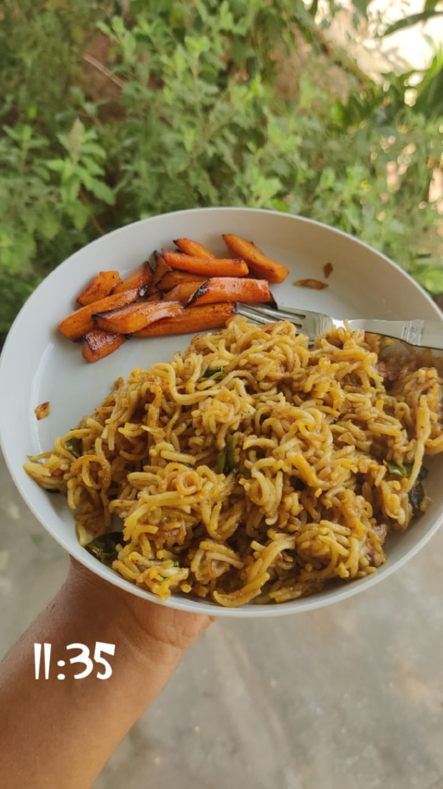
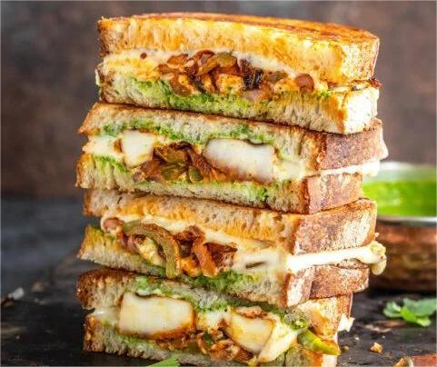
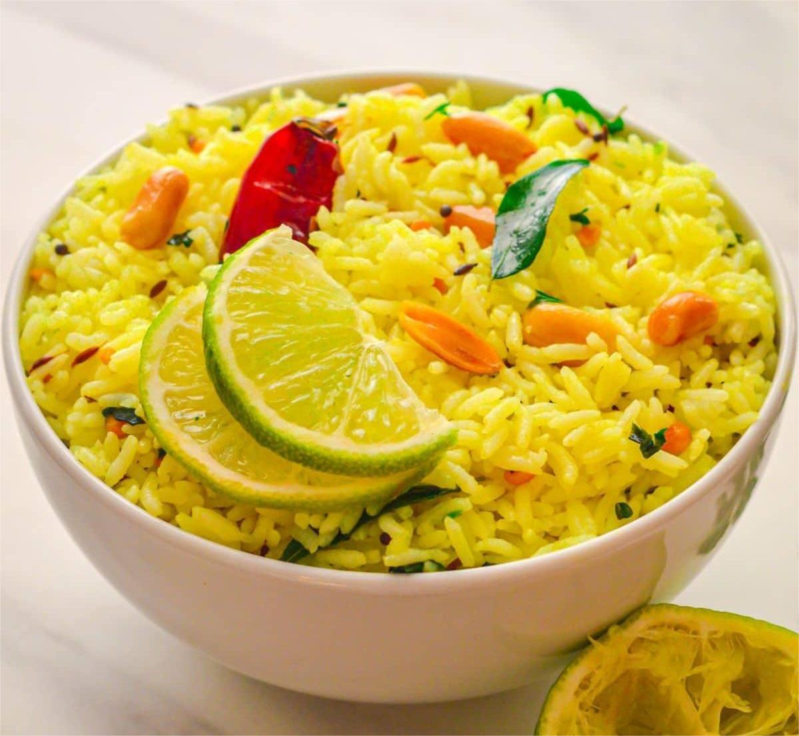
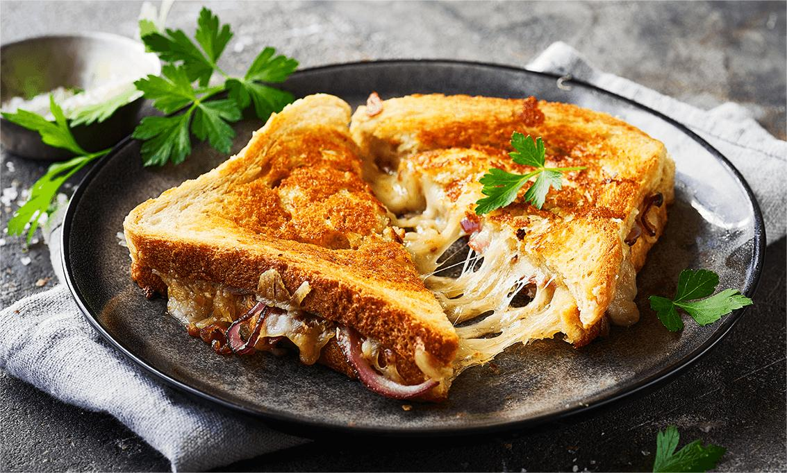
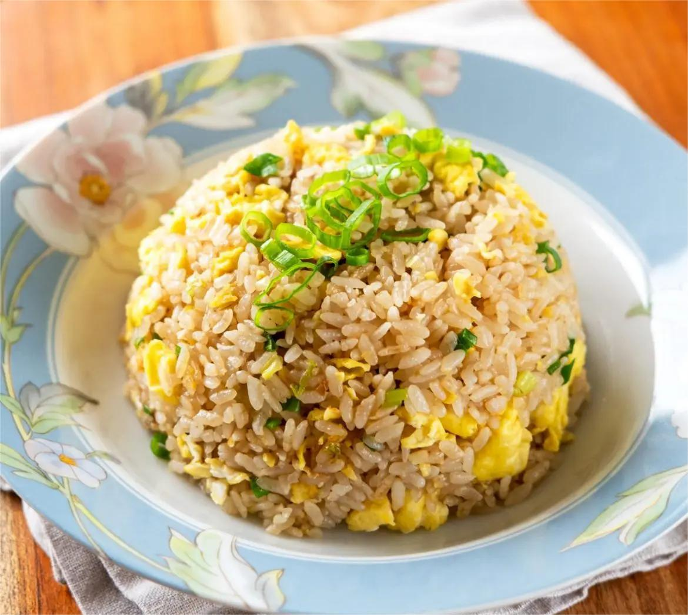

Easy Student-Friendly Recipes

Fried Maggi
Leftover or fresh Maggi tossed with veggies and sauces.
Ingredients
- 1 pack Maggi noodles
- 1 small onion, chopped
- 1 small carrot, chopped
- 1 small capsicum, chopped
- 2 tsp soy sauce
- 1 tsp chili sauce (optional)
- Oil as required
- Salt to taste
Method
- Boil Maggi noodles for 2 minutes, drain and keep aside.
- Heat oil in a pan and sauté onions and other veggies until slightly soft.
- Add cooked noodles, soy sauce, chili sauce, and salt.
- Stir-fry for 2-3 minutes on high heat till well combined.
- Serve hot.

Scrambled Eggs
Fluffy eggs cooked with onions and mild spices.
Ingredients
- 2-3 eggs
- 1 small onion, finely chopped
- 1 tbsp milk
- Salt and pepper to taste
- 1 tsp butter or oil
Method
- Beat eggs with milk, salt, and pepper until fluffy.
- Heat butter in a pan and sauté onions till soft.
- Pour egg mixture into the pan.
- Gently stir continuously until eggs are cooked but still soft.
- Serve warm with bread or toast.

Paneer Sandwich
Grilled sandwich stuffed with spiced paneer.
Ingredients
- 4 slices of bread
- 100g paneer, crumbled
- 1 small onion, finely chopped
- 1 small tomato, chopped
- 1 tsp chaat masala
- Butter for spreading
Method
- Mix paneer with onion, tomato, and chaat masala.
- Spread butter on bread slices.
- Place paneer mixture between two slices.
- Grill on a pan or sandwich maker till golden brown.
- Cut diagonally and serve hot.

Lemon Rice
South Indian rice flavored with lemon and peanuts.
Ingredients
- 1 cup cooked rice
- 1 tbsp oil
- 1/2 tsp mustard seeds
- 1/2 tsp turmeric powder
- 1 tbsp peanuts
- 1 tbsp lemon juice
- Salt to taste
- Curry leaves few
Method
- Heat oil in a pan and add mustard seeds and curry leaves.
- Add peanuts and fry till golden.
- Add turmeric powder and mix well.
- Add cooked rice and salt, mix gently.
- Turn off heat and add lemon juice. Mix well.
- Serve warm.

Cheese Toast
Golden toasted bread with melted cheese and herbs.
Ingredients
- 2 slices bread
- 2 slices cheese
- Butter for spreading
- Oregano or mixed herbs
Method
- Spread butter on bread slices.
- Place cheese on one slice and sprinkle herbs.
- Cover with another slice and grill in sandwich maker or pan.
- Cook until golden and cheese melts.
- Serve hot with ketchup or sauce.

Egg Fried Rice
Rice stir-fried with eggs, veggies, and sauces.
Ingredients
- 1 cup cooked rice
- 2 eggs
- 1 small carrot, chopped
- 1 small capsicum, chopped
- 1 small onion, chopped
- 1-2 tsp soy sauce
- Salt & pepper to taste
- 2 tsp oil
Method
- Heat oil in a pan and sauté onion, carrot, and capsicum.
- Push veggies to the side and scramble eggs in the pan.
- Add cooked rice, soy sauce, salt, and pepper.
- Mix everything well and fry for 3-4 minutes on medium heat.
- Serve hot.